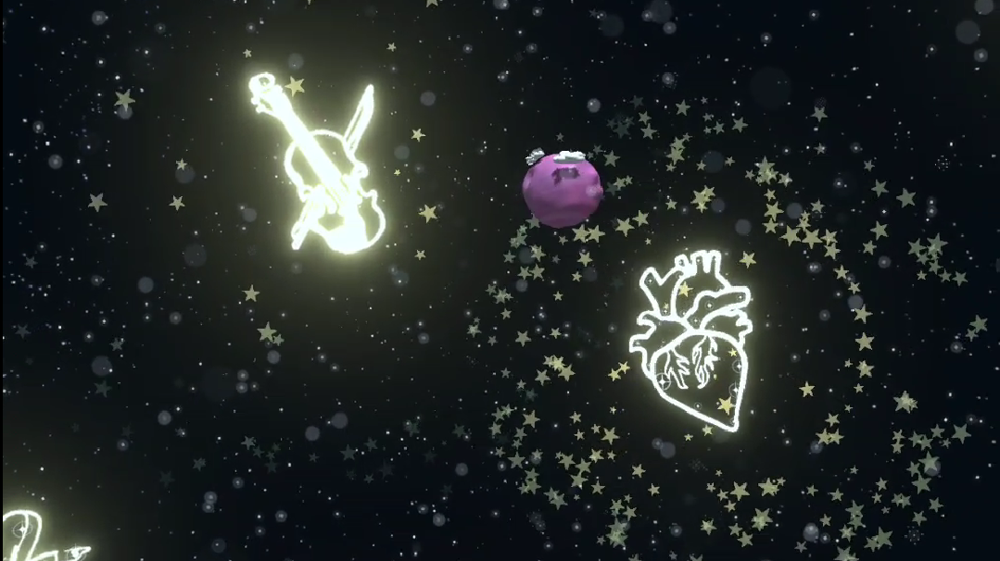

A VR music experience for Meta Quest where the player floats in a space environment and shoots constellation targets to progressively unlock up to 10 layered music tracks. Built with a team of four and presented publicly as part of an immersive media design course.
VR demonstration below (best experienced with audio enabled).
Each constellation needed to visibly pulse in sync with its own music track. Getting that timing precise, while staying performant on Meta Quest's limited hardware, turned out to be the harder half of the problem.
The system samples the amplitude of each audio source and maps it to the emission intensity of the matching constellation's glow. To avoid visible lag between sound and light, the amplitude is sampled slightly ahead of real-time playback rather than exactly on-beat, so the visual response lands in sync with what the player actually hears. The sampling rate itself was tuned carefully to balance responsiveness against the Quest's performance ceiling.
A playable VR experience with particle effects and glowing constellations that react live to as many as 10 layered tracks, running comfortably on standalone Quest hardware.